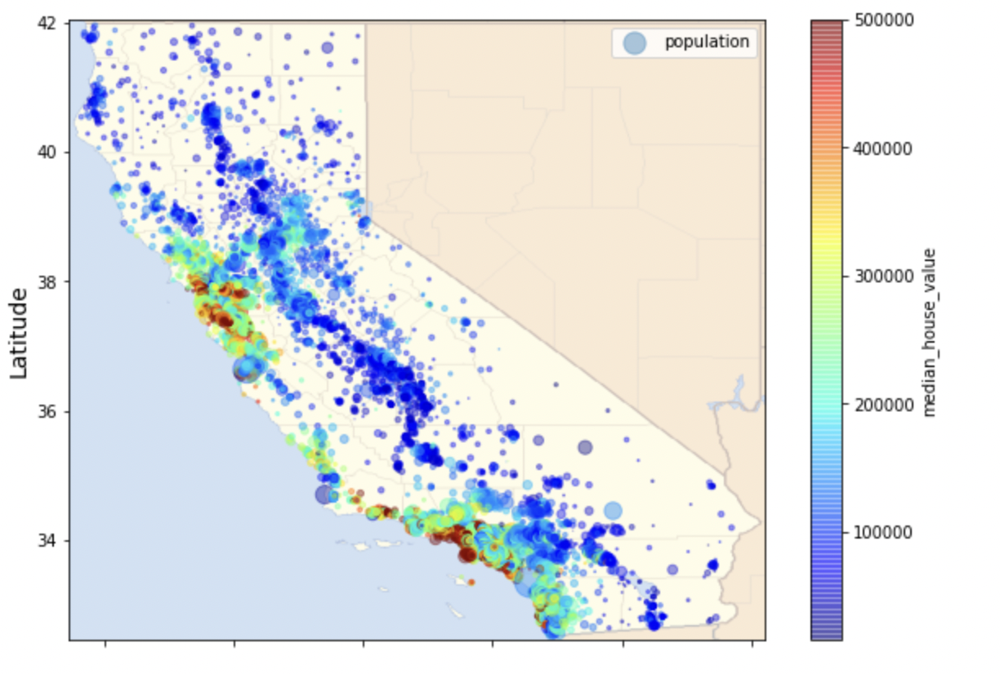

Geospatial view of houses wrt median_house_value
The above visualization depicts the median value of the houses from which we can deduce the distribution pattern of them based on the location they're in.
Geospatial view of houses wrt median_house_value

The above visualization depicts the median income of the population from which we can deduce the distribution pattern of them based on the income they make.
Visualisation of date of addition of content vs year of release


The above visualization depicts the trend at which content added to netflix has been diversified based on year of release.
Visualisation of trend based on year of release for movies vs TV shows

It can be observed that the same trend pertains for both movies and tv shows based on year of release.
Visualization of kinds of ratings based on release year

This depicts that PG 13 has seen a comparitively steeper growth than others.